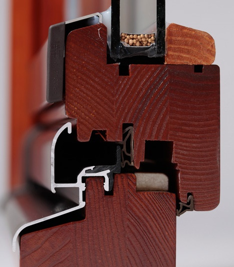
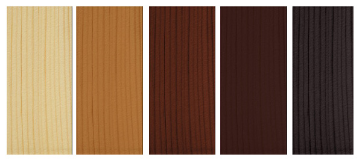
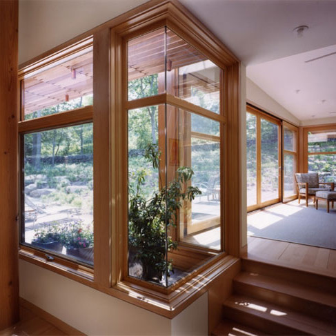
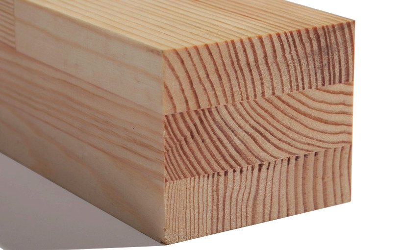

Натуральність і краса!
Дерев’яні вікна — це втілення домашнього тепла та затишку.
Естетичні характеристики виробів з деревини залишаються поза конкуренцією,
незважаючи на досить вдалі спроби копіювати її фактуру.
Конструкція євровікна:

- Рама і створка віконного блоку виготовлені із тришарового брусу сосни, дубу чи міранті розміром 68 чи 78х80.
Віконний блок пофарбований по схемі: антисептик, грунтовка, лак. - Ущільнювачі Schlegel захищають від дії несприятливих чинників зовнішнього середовища і забезпечують додаткову звуко- та теплоізоляцію.
- Паз під внутрішній підвіконник.
- Паз під зовнішній відлив.
- Алюмінієвий водовідливний профіль захищає від потрапляння вологи та руйнування створки.
- Штапік з тіньовим пазом, що приховує лінію примикання до створки чи рами.
- Склопакет одно чи двокамерний енергозберігаючий на ваш вибір.
- Із внутрішньої та зовнішньої сторони, в місцях стику склопакету з деревиною проводиться спеціальна обробка напівпрозорими силіконовими герметиками, які забезпечують герметизацію склопакету у віконному блоці.
- Фурнітура німецького виробництва.
Переваги дерев’яних євровікон
Екологічна чистота і безпека
З екологічної точки зору переваги деревини, в порівнянні з аналогічними матеріалами, очевидні, адже дepeвo — натуральний екологічно чистий матеріал. Використання дерев’яних віконних конструкцій знижує концентрацію вуглекислого газу в приміщенні та дозволяє створити атмосферу теплоти та затишку. Вікна з природних матеріалів являються максимально корисними і створюють відчуття єднання з природою. Дерев’яні вікна проходять багатоступеневу обробку лакофарбовими матеріалами на водній основі останнього покоління виробництва Німеччини та Швеції. Завдяки своїм унікальним властивостям паропроникності та еластичності сучасні лакофарбові матеріали дозволяють зберігати первозданну красу природи дерев’яних вікон на довгі роки експлуатації.
Теплоізоляція
Деревина має низьку теплопровідність, що дозволяє підвищити стійкість вікон до різкого перепаду температури і знизити коефіцієнт температурного лінійного розширення. В сукупності зі склопакетом та якісними ущільнювачами, дерев’яні вікна перевершують за своїми характеристиками будь-які пластмасові або алюмінієві вікна. Дерево, завдяки своїм унікальним властивостям, є одним з кращих теплоізоляційних матеріалів. Низький рівень теплопровідності виключає можливість виникнення термомостів у віконних рамах. Доторкнутись до віконної рами з деревини приємно навіть тоді, коли на вулиці мінусова температура.
Щоб виключити будь-які деформаційні процеси при зміні кліматичного сезону необхідно використовувати клеєну конструкцію, як правило, тришарову, спеціального радіального розпилу (кут нахилу річних кілець більше 45°). Принциповим моментом є процес сушки, так званий м’який режим, коли дерево проходить процес сушіння в спеціальних камерах не менше 7 діб. Контроль за дотриманням усіх вищевказаних вимог робить віконний дерев’яний брус унікальним будівельним матеріалом, аналог якому важко уявити.
Різноманітність форм і кольорів
Дерев’яні вікна можуть бути різної форми і будь-якого кольору. При необхідності ми навіть можемо підібрати відтінок забарвлення вікна, до прикладу, під колір спальні або дверей. Благородство натурального матеріалу, звідси і багате різноманіття дизайнерських рішень при дорогих обробках в поєднанні з іншими елементами інтер’єру (двері, паркет, кабінет, меблі тощо).
Шумоізоляція
Дерев’яні вікна мають підвищену шумоізоляцію. У сучасних конструкціях використовується двокамерний склопакет, якісні ущільнювачі, що підвищують рівень шумоізоляції в декілька разів. Показники звукоізоляції і теплообміну у дерев’яних вікнах відчутно вище, ніж у інших матеріалах тієї ж товщини, а ось коефіцієнт температурного розширення нижче. І це ще один аргумент на користь дерева, оскільки низький коефіцієнт вказує на стійкість до перепадів температур і меншої зміни розмірів внаслідок стиснення і розширення.
Повітрообмін
Деревина має пocтійний обмін вологи та повітря нормалізуючи кількість кисню в приміщенні. Рами з дерева “дихають”, допомагаючи підтримувати потрібний рівень вологості. Повітрообмін проходить скрізь мікропори “живої” структури деревини. Тому і при закритих вікнах відбувається поступова вентиляція приміщення, що дозволяє підтримувати свіжість повітря і запобігає появі конденсату. Дерев’яне вікно за 24 години пропускає через свої пори приблизно 2,5 куб. м. повітря. Для збільшення терміну експлуатації деревини на вироби наносять спеціальні захисні покриття і лаки. При цьому, лаки і спеціальні розчини не заважають рамі “дихати” і тим самим регулювати, в залежності від погодних умов, вологість повітря.
Довговічність
Дерев’яні вікна, завдяки сучасній конструкції і якісній обробці нашими фахівцями, довговічні в експлуатації. Вікна, оброблені спеціальними фарбами на водній основі, зберігають свої відтінки навіть під впливом прямих сонячних променів. Вікна з тришарового клеєного брусу мають стабільні розміри і розрахунковий термін служби більше 45 років. Сучасні конструкції, якісна обробка гарантують надійність та довговічність дерев’яних вікон. Жоден інший матеріал не може зрівнятися довговічністю з деревом. Згадайте, скільки десятиліть стояли дерев’яні вікна в наших будинках. Зважаючи на свою натуральність, деревина прекрасно пристосована до наших кліматичних умов. Вони витримують перепад температур від -50 до +50 °С. На сьогоднішній день успішно вирішуються проблеми стійкості фарб. Спеціально розроблені для вікон системи забарвлення з лаками на базі водних розчинників, мають підвищену адгезією з деревиною, довгий час залишаються еластичними, пропускають водяну пару і тим самим забезпечують стійкість покриття і збереження кольору навіть під впливом ультрафіолетових променів.
Престиж
Дерев’яні вікна мають не тільки відмінні техніко-експлуатаційні характеристики, але й прекрасні естетичні властивості. Завдяки сучасним дерев’яним вікнам ваш будинок набуде неповторний характер і особливу атмосферу затишку та комфорту. Придбати дерев’яні вікна може дозволити собі далеко не кожен. Такі вікна — це показник гарного смаку і стабільного доходу!
Затишок у будинку
Деревина — це один з найбільш сприятливих для людини матеріалів. У поєднанні з сучасною фурнітурою і склопакетом, який непотрібно розбирати і мити всередині — дерев’яне вікно створює ні з чим не порівнянний мікроклімат в будинку (деревина, на відміну від інших матеріалів, є дихаючим матеріалом).
Захист
Завдяки надійній фурнітурі МАСО (Австрія) і широкому вибору заповнень дерев’яні вікна можуть захищати житло від проникнення небажаних гостей, за рахунок трьох чвертей, які не дають можливості встановити між стулкою і рамою спеціальних предметів для взлому фурнітури. Протизломна фурнітура є гарантом захисту віконної системи.
Також необхідно звернути увагу на міцність склопакету. У таких випадках застосовується скло, з’єднане між собою і посилене полімерним матеріалом. Броне плівки так само здатні захистити склопакет із зовнішньої сторони. Захисна плівка виробляється за стандартами, та має одну або декілька ступенів захисту. Наприклад, плівка з індексом А1 завтовшки всього 0,3 мм, здатна витримати удар сокири. Таким чином, використовуючи сучасні засоби захисту, ви зможете максимально убезпечити себе і своє майно від непроханих гостей.
Економія
Наші дерев’яні вікна дозволяють економити до 30% теплової енергії за рахунок зниження втрат тепла в порівнянні зі звичайними дерев’яними вікнами. Одного разу витратившись на якісні вікна, вони прослужать Вам довгий час і принесуть ні з чим незрівнянну радість в процесі експлуатації.
Міцність
Міцність і незмінність геометричних розмірів вікна з ПВХ забезпечують металевий профіль усередині конструкції і пластик зовні. Якщо виробник заощадить хоча б на одному з цих матеріалів, то це призведе до неприємних наслідків: міняти доведеться все вікно. Дерево ж підробити неможливо — якість виробів видно відразу неозброєним оком. Дерев’яні вікна виготовляють з тришарового клеєного бруса перетином 68 × 80 мм та 78 × 80 мм Саме клеєний брус гарантує стійкість всієї конструкції до погодних умов. Він має більш високу міцність і довговічність у порівнянні зі звичайним брусом того ж перетину з масиву.
Ремонтоздатність
Ремонтоздатність дозволяє усувати видимі подряпини на поверхні. Відремонтувати зовнішні дефекти на пластиковому вікні практично неможливо, всі пошкодження на ньому непоправні. Крім того, через свою електростатичність, ПВХ притягує пил, що неминуче відбивається на зовнішньому вигляді вікна.